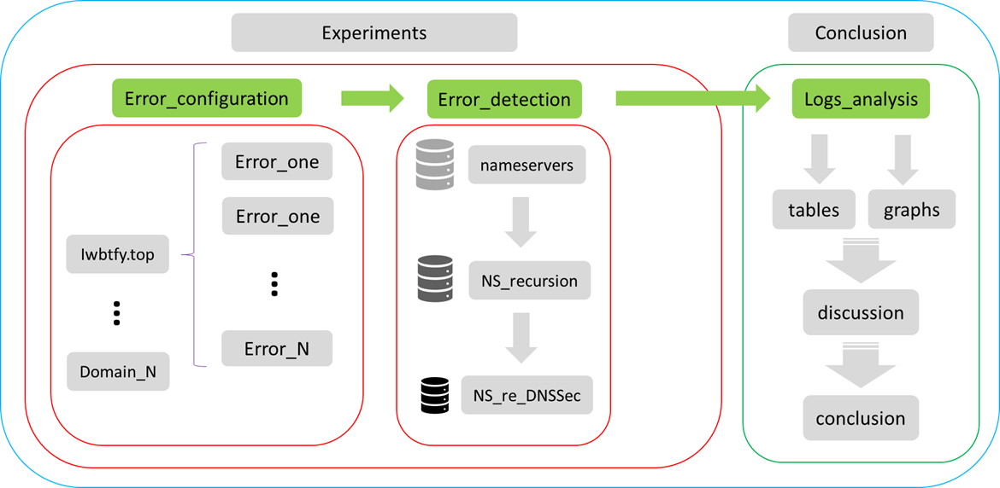
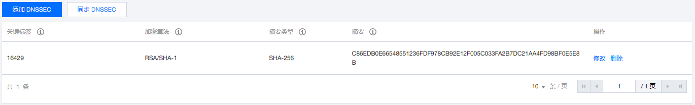
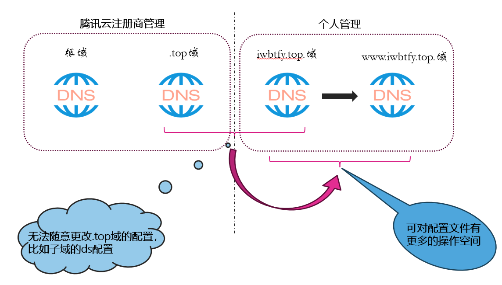

dnssec-detect项目年度报告
-
illuminate
-
iwbtfy
1.项目背景与要求
1.1 梳理错误类型
| INFO-CODE | PURPOSE | DESCRIPTION |
|---|---|---|
| 0 | other error | does not match known extended error |
| 1 | Unsupported DNSKEY Algorithm | DNSKEY RRset contained only unsupported DNSSEC algorithms. |
| 2 | Unsupported DS Digest Type | a DS RRset contained only unsupported Digest Types. |
| 3 | stale Answer | The resolver was unable to resolve the answer within its time limits |
| 4 | Forged Answer | provide a forged answer for some reasons |
| 5 | DNSSEC Indeterminate | DNSSEC validation by resolver ended in the indeterminate state |
| 6 | DNSSEC Bogus | DNSSEC validation by resolver ended in the bogus state |
| 7 | Signature Expired | no signatures are presently valid and some (often all) are expired |
| 8 | Signature Not Yet Valid | no signatures are presently valid and at least some are not yet valid. |
| 9 | DNSKEY Missing | A DS record existed at a parent, but no supported matching DNSKEY record could be found for the child |
| 10 | RRSIGs Missing | no RRSIGs could be found for at least one RRset where RRSIGs were expected. |
| 11 | No Zone Key Bit Set | no Zone Key Bit was set in a DNSKEY |
| 12 | NSEC Missing | the requested data was missing and a covering NSEC or NSEC3 was not provided. |
| 13 | Cached Error | The resolver is returning the SERVFAIL RCODE from its cache. |
| 14 | Not Ready | The server is unable to answer the query, as it was not fully functional when the query was received. |
| 15 | Blocked | The server is unable to respond to the request because the domain is on a blocklist |
| 16 | Censored | The server is unable to respond to the request because the domain is on a blocklist due to an external requirement imposed by an entity |
| 17 | Filtered | the request domain is on a blocklist as requested by the client |
| 18 | Prohibited | a query from an "unauthorized" client can annotate its REFUSED message with this code |
| 19 | Stale NXDomain Answer | answer with a previously cached NXDOMAIN answer |
| 20 | Not Authoritative | |
| 21 | Not Supported | The requested operation or query is not supported |
| 22 | No Reachable Authority | The resolver could not reach any of the authoritative name servers (or they potentially refused to reply). |
| 23 | Network Error | An unrecoverable error occurred while communicating with another server. |
| 24 | Invalid Data | The authoritative server cannot answer with data for a zone it is otherwise configured to support |
| 25-49151 | Unassigned | |
| 49151-65535 | reserved for private use |
1.2 配置梳理的错误并且验证服务器是否可以检测错误
- 在梳理完错误的基础上，拟搭建测试环境，将多个支持DNSSEC的权威域名设置不同错误配置，通过命令行和脚本的形式发数据包请求，对开放的支持DNSSEC的重要递归解析服务器进行探测，
分析递归解析服务器是否提供相应的错误提示，以判定递归服务器对DNSSEC配置错误是否有效验证。
2.项目方案
首先，我们基于 RFC8914 等标准，全面梳理DNSSEC的错误配置类型；
接着，我们搭建了域名iwbtfy.top，配置好了可以配置的相关错误；
同时，为了配置更多的错误，我们扩展到三级域，并且进行相应的配置；
然后，我们从全球前百万的dns服务器表中筛选了支持dnssec的递归服务器；
最后，编写好python脚本探测程序，以及python结果统计程序，对这一错误进行检错统计。大致方案流程如下图：

2.1 环境准备
- 一台腾讯云服务器：123.207.59.193
- 一个腾讯云的域名：iwbtfy.top
2.2 配置域名iwbtfy.top
1. 将租借的iwbtfy.top域名解析的dns服务器指向租借的腾讯云服务器

2. 在腾讯云服务器中配置该域名的域配置文件，使其可以成功解析域名
- 下载安装bind
yum install bind -y - 配置/etc/named.conf文件
zone "iwbtfy.top" IN { type master; auto-dnssec maintain; update-policy local; file "iwbtfy.top.zone"; key-directory "/var/named/keys"; }; - 配置/var/named/iwbtfy.top.zone文件
$TTL 600 iwbtfy.top. IN SOA ns admin.iwbtfy.top. ( 3 1H 5M 2D 6H ) iwbtfy.top. IN NS ns.iwbtfy.top. iwbtfy.top. IN MX 10 mail.iwbtfy.top. ns IN A 123.207.59.193 mail IN A 123.207.59.193 ;www IN A 123.207.59.193 ;ftp IN CNAME www @ IN A 123.207.59.193 www IN NS ns1.www ns1.www IN A 123.207.59.193
3. 在腾讯云服务器中进一步配置该域名的dnssec配置
-
生成keys
mkdir /var/named/keys # 创建文件夹 cd /var/named/keys dnssec-keygen -f KSK -a RSASHA1 -r /dev/urandom -b 512 -n ZONE iwbtfy.top. dnssec-keygen -a RSASHA1 -r /dev/urandom -b 512 -n ZONE iwbtfy.top. kSK Kiwbtfy.top.+005+16429.key ZSK Kiwbtfy.top.+005+63462.key -
将keys添加到/var/named/iwbtfy.top.zone
vi iwbtfy.top.zone 添加 $INCLUDE "/var/named/keys/Kiwbtfy.top.+005+16429.key" $INCLUDE "/var/named/keys/Kiwbtfy.top.+005+63462.key" -
用keys签名zone
dnssec-signzone -K /var/named/keys -o iwbtfy.top. /var/named/iwbtfy.top.zone -
修改/etc/named.conf文件
zone "iwbtfy.top" IN { type master; auto-dnssec maintain; update-policy local; file "iwbtfy.top.zone.signal"; # 改成签名过的域文件 key-directory "/var/named/keys"; }; -
生成ds记录
dnssec-dsfromkey -2 Kiwbtfy.top.+005+16429.key iwbtfy.top. IN DS 16429 5 2 C86EDB0E66548551236FDF978CB92E12F005C033FA2B7DC21AA4FD98BF0E5E8B -
将ds记录添加到腾讯云控制台

2.3 扩展三级域——www.iwbtfy.top

2.4 修改域名dnssec配置——配置错误
具体修改------> 3.项目方案实施结果总结
2.5 筛选支持dnssec的递归服务器
- 收集dns服务器
- 筛选支持dnssec的递归服务器
- recursion
# 筛选递归服务器 # flag字段中含有RA ---> recursion available # 参数说明 # nameserver：需要检测的dns服务器ip def is_recursion(nameserver): # 定义dig命令和参数 dig_command = ['dig', '+norecurse', 'example.com', '@' + nameserver] # 执行dig命令 try: dig_output = subprocess.check_output(dig_command) except subprocess.CalledProcessError as e: print("Error running dig:", e) exit(1) # 在输出中查找包含"flags"的行 flags_line = None for line in dig_output.split('\n'): if "flags".encode("utf-8") in line: flags_line = line break # 从含有flags的行中进一步查询是否有RA字段 if "ra".encode("utf-8") in flags_line: return True else: return False- dnssec
# 筛选递归服务器中的支持dnssec的递归服务器 # flag字段中含有AD ---> authenticated data # 参数说明 # nameserver：需要检测的dns服务器ip def is_dnssec(nameserver): # 定义dig命令和参数 dig_command_two = ['dig', '+norecurse', 'example.com', '@' + nameserver] # 执行dig命令 try: dig_output = subprocess.check_output(dig_command_two) except subprocess.CalledProcessError as e: print("Error running dig:", e) exit(1) # 在输出中查找包含"flags"的行 flags_line = None for line in dig_output.split('\n'): if "flags".encode("utf-8") in line: flags_line = line break # 从含有flags的行中进一步查询是否有RA字段 if "ad".encode("utf-8") in flags_line: return True else: return False
2.6 编写脚本探测服务器检错能力
# 检测dnssec的配置错误并且写入文件
# 参数说明
# errors: 配置的错误(如果不知道可以填NULL) domain_name: 需要检测的域名
# nameserver_file: 使用的递归服务器的文件路径 key_file: 根服务器的key的路径
# logs: 存储日志的列表 record_types: 需要查询域名的记录类型
# project_root_file: 项目的根路径
def detect_error(errors, domain_names, nameserver_file, key_file, logs, record_types, project_root_file):
log_file = os.path.join(project_root_file, "data", "detect_logs",
"detect_logs_" + domain_names.split('.')[0] + '_' +
errors + ".txt")
nameserver_re_dnssec = np.loadtxt(nameserver_file, delimiter=',', dtype=str)
errors_set = set()
for nameserver in nameserver_re_dnssec:
# 创建dig命令
dig_command = ['dig', '@' + nameserver, '+sigchase', '+trusted-key=' + key_file, domain_names, record_types]
try:
# 日志
logs.append(nameserver)
result = subprocess.check_output(dig_command)
lines = result.splitlines()
if lines:
last_line = lines[-1]
if not last_line:
last_line = lines[-2]
print(last_line)
errors_set.add(last_line)
# 保存日志
logs.append(result)
except subprocess.CalledProcessError as e:
errors_set.add("DIG command failed")
logs.append("DIG command failed")
print("connection time out")
except FileNotFoundError:
print('DIG command not found. Make sure dig is installed on your system.')
# 将log这个list写入txt文件
np.savetxt(log_file, logs, delimiter=',', fmt='%s')
# 将error_set 写入txt文件
error_list = list(errors_set)
error_list_file = os.path.join(project_root_file, "data", "error_list",
"errors_list_" + domain_names.split('.')[0] + '_' +
errors + ".txt")
np.savetxt(error_list_file, error_list, delimiter=',', fmt='%s')
2.7 结果统计与分析
具体统计分析------> 3.项目方案实施结果总结
3.项目方案实施结果总结
3.1 iwbtfy.top上配置的错误
- 错误的ds
- 配置：修改ds记录的摘要算法
- 结果：
- 说明：
- Error no DS validates a DNSKEY in the DNSKEY RRset：期望的正确返回
- DIGcommand failed：无法连接到dns服务器
- Impossible to verify the non-existence, the NSEC RRset can’t be validated：服务器探测不到域名的A地址时的返回，即当服务器发现域名的DNSSEC配置有问题后就不再进一步解析，也可算是一种检错的结果
- DSKEY is missing to Ncontinue validation：检测错误
- RRSIG is missing to continue validation：检测错误
- 针对该配置错误类型，我们以Error no DS validates a DNSKEY in the DNSKEY Rrset为主要判断依据。
- Unsupported DNSKEY Algorithm
- 配置：将DNSKEY的签名算法值改掉
600 DNSKEY 256 3 5 (
AwEAAdxgYRXnZANzpvCRkDg7chu82TfMMqHa
U4VB/G0lT5rUlGdi1GZfSgjLmcjWt2X+i0lZ
QAuojeKlOMRUnIb3h1U=
) ; ZSK; alg = RSASHA1 ; key id = 63462
5 ----> 30
- 结果:

- 说明:
- No DNSKEY is valid to check the RRSIG of the RRset：期望的正确返回
- DIGcommand failed：无法连接到dns服务器
- Impossible to verify the non-existence, the NSEC RRset can’t be validated：服务器探测不到域名的A地址时的返回，即当服务器发现域名的DNSSEC配置有问题后就不再进一步解析，也可算是一种检错的结果
- DNSKEY is missing to continue validation：检测错误
- RRSIG is missing to continue validation：检测错误
- 针对该配置错误类型，我们以No DNSKEY is valid to check the RRSIG of the RRset为主要判断依据。
- RRSIG missing
- 配置: 直接注释掉A记录的RRSIG
600 A 123.207.59.193
; 600 RRSIG A 5 2 600 (
; 20240112145536 20231213145536 63462 iwbtfy.top.
; hdCiDnQ11MYeqRhx+PzKMFrFgsujDoD/PWSe
; hWR9KwawsoDabXWjmryhT5PzwpIsuVim09Qw
; BwYqeLtjCvguFQ== )
- 结果:
- 说明:
- RRSIG is missing to continue validation：期望的正确返回
- DIGcommand failed：无法连接到dns服务器
- Impossible to verify the non-existence, the NSEC RRset can’t be validated：服务器探测不到域名的A地址时的返回，即当服务器发现域名的DNSSEC配置有问题后就不再进一步解析，也可算是一种检错的结果
- 针对该配置错误类型，我们以RRSIG is missing to continue validation为主要判断依据。
- NSEC missing
- 配置: 直接注释掉nsec
; 21600 NSEC mail.iwbtfy.top. A NS SOA MX RRSIG NSEC DNSKEY
; 21600 RRSIG NSEC 5 2 21600 (
; 20240112145536 20231213145536 63462 iwbtfy.top.
; HVTpaXHK2/gQXtj6MEaL0f1KntSWRSk2gHnl
; 3F9cjYttR/jcLWYdJOshXBNjSWokpvF7auih
; 3+li4ADLAIFMYw== )
- 结果:

- 说明:
- Impossible to verify the non-existence, the NSEC RRset can’t be validated：期望的正确返回
- DIGcommand failed：无法连接到dns服务器
- DNSKEY is missing to continue validation：检测错误
- RRSIG is missing to continue validation：检测错误
- 针对该配置错误类型，我们以Impossible to verify the non-existence, the NSEC RRset can’t be validated为主要判断依据。
3.2 www.iwbtfy.top上配置的错误
- DNSKEY missing
- 配置: 直接注释掉DNSKEY
; 600 DNSKEY 256 3 5 (
; AwEAAZjFG/UFHijzwJ5d2TpLl7XYwKJodDpJ
; LrSxRAHMEqAd7O0t0NVtXRooQPO+RjgGIqmp
; D9BB3cpzhuqeQSLHI3k=
; ) ; ZSK; alg = RSASHA1 ; key id = 24216
-
结果:

-
说明:
- RRSIG is missing to continue validation：期望的正确返回
- DIGcommand failed：无法连接到dns服务器
- Impossible to verify the non-existence, the NSEC RRset can’t be validated：服务器探测不到域名的A地址时的返回，即当服务器发现域名的DNSSEC配置有问题后就不再进一步解析，也可算是一种检错的结果
- Error no DS validates a DNSKEY in the DNSKEY RRset：检测错误
- 针对该配置错误类型，我们以RRSIG is missing to continue validation为主要判断依据。
- RRSIG missing
- 配置: 直接注释掉RRSIG
600 A 123.207.59.193
; 600 RRSIG A 5 3 600 (
; 20240113102237 20231214102237 24216 www.iwbtfy.top.
; fHjWKPUHJdUhWZiZmQJyVG23gPZdEcNbhwe1
; ievRpFmRvUa9dAiCtTqeHXWhxy+U8i6EjSNM
; 4Tv7HXZc/OKpPw== )
-
结果:

-
说明:
- RRSIG is missing to continue validation：期望的正确返回
- DIGcommand failed：无法连接到dns服务器
- Impossible to verify the non-existence, the NSEC RRset can’t be validated：服务器探测不到域名的A地址时的返回，即当服务器发现域名的DNSSEC配置有问题后就不再进一步解析，也可算是一种检错的结果
- 针对该配置错误类型，我们以RRSIG is missing to continue validation为主要判断依据。
- Signature Not Yet Valid
- 配置: 将签名的起始时间改为比当前的时间晚
600 DS 19291 5 2 (
4B91D8C3CBD8F956D8CF35FF7E7369EE307C
526F9A0F5C9B3BFA720158D98970 )
600 RRSIG DS 5 3 600 (
20240112145536 20231213145536 63462 iwbtfy.top.
BJyUMVBGzFZ1Xq3eCp7/FK4cwZUFq8gBBqt/
cMQFSxGoz4XeQssiBysQlX33kzlR5TA4KYTT
sntsqqDLxZJ/+Q== )
目前时间-->20231223234345
结束有效时间-->20240112145536
开始有效时间-->20231213145536 改成 20231224432432
-
结果:

-
说明:
- RRSIG is missing to continue validation：期望的正确返回
- DIGcommand failed：无法连接到dns服务器
- Impossible to verify the non-existence, the NSEC RRset can’t be validated：服务器探测不到域名的A地址时的返回，即当服务器发现域名的DNSSEC配置有问题后就不再进一步解析，也可算是一种检错的结果
- DNSKEY is missing to continue validation：检测错误
- No DNSKEY is valid to check the RRSIG of the RRset：检测错误
- 针对该配置错误类型，我们以RRSIG is missing to continue validation为主要判断依据。
- Signature Expired
- 配置: 将签名的结束时间改成比当前的早
600 DS 19291 5 2 (
4B91D8C3CBD8F956D8CF35FF7E7369EE307C
526F9A0F5C9B3BFA720158D98970 )
600 RRSIG DS 5 3 600 (
20240112145536 20231213145536 63462 iwbtfy.top.
BJyUMVBGzFZ1Xq3eCp7/FK4cwZUFq8gBBqt/
cMQFSxGoz4XeQssiBysQlX33kzlR5TA4KYTT
sntsqqDLxZJ/+Q== )
目前时间-->20231223234345
结束有效时间-->20240112145536 改成 20231222432432
开始有效时间-->20231213145536
-
结果:
-
说明:
- Impossible to verify the non-existence, the NSEC RRset can’t be validated：期望的正确返回
- DIGcommand failed：无法连接到dns服务器
- DNSKEY is missing to continue validation：检测错误
- RRSIG is missing to continue validation：检测错误
- 针对该配置错误类型，我们以Impossible to verify the non-existence, the NSEC RRset can’t be validated为主要判断依据。
- Unsupported DS Digest Type
- 配置: 将ds记录的摘要类型改成支持范围外
600 DS 19291 5 2 (
4B91D8C3CBD8F956D8CF35FF7E7369EE307C
526F9A0F5C9B3BFA720158D98970 )
5 ---> 50
-
结果:
-
说明:
- Error no DS validates a DNSKEY in the DNSKEY RRset：期望的正确返回
- DIGcommand failed：无法连接到dns服务器
- Impossible to verify the non-existence, the NSEC RRset can’t be validated：服务器探测不到域名的A地址时的返回，即当服务器发现域名的DNSSEC配置有问题后就不再进一步解析，也可算是一种检错的结果
- DNSKEY is missing to continue validation：检测错误
- RRSIG is missing for continue validation：检测错误
- RRSIG for DNSKEY is missing to continue validation：检测错误
- the DNSKEY isn't trusted-key and there isn't DS to validate the DNSKEY：检测错误
- 针对该配置错误类型，我们以Error no DS validates a DNSKEY in the DNSKEY RRset为主要判断依据。
- DNSKEY Signature expired
- 配置: 修改dnskey的签名时间比当前早
600 RRSIG DNSKEY 5 3 600 (
20240113102237 20231214102237 19291 www.iwbtfy.top.
dbcIJCaP6qFlpf5rc7tB76qE0ijYEPd8T+8k
Yt6vj+ZzyvMdPcqHlOAt8GPOMtuf4x1swmD7
ZanW8Y/Sc1Rojg== )
目前时间-->20231223234345
结束有效时间-->20240113102237 改成 20231222432432
开始有效时间-->20231214102237
- 结果:

-
说明:
- RRSIG is missing for continue validation：期望的正确返回
- DIGcommand failed：无法连接到dns服务器
- Impossible to verify the non-existence, the NSEC RRset can’t be validated：服务器探测不到域名的A地址时的返回，即当服务器发现域名的DNSSEC配置有问题后就不再进一步解析，也可算是一种检错的结果
- DNSKEY is missing to continue validation：检测错误
- No DNSKEY is valid to check the RRSIG of the RRset：检测错误
- 针对该配置错误类型，我们以RRSIG is missing for continue validation为主要判断依据。
4.未来推进方向探究
在于陈老师开会讨论后，陈老师提出了新的思路，即通过修改dig版本，使其支持edns，将其他返回的错误文本信息都统一转换为error_code，如下图，以更好的说明服务器的检测能力。同时，为了搭建一个整体的检测系统，我们后续将为每一种错误类型申请一个三级域名并配置错误，最后再封装成递归解析安全增强措施部署分析的原型系统。